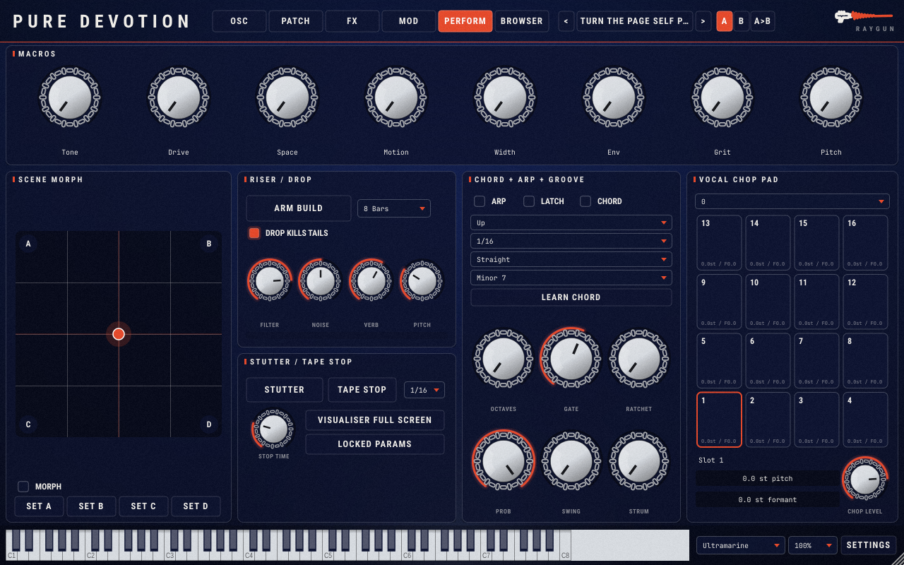
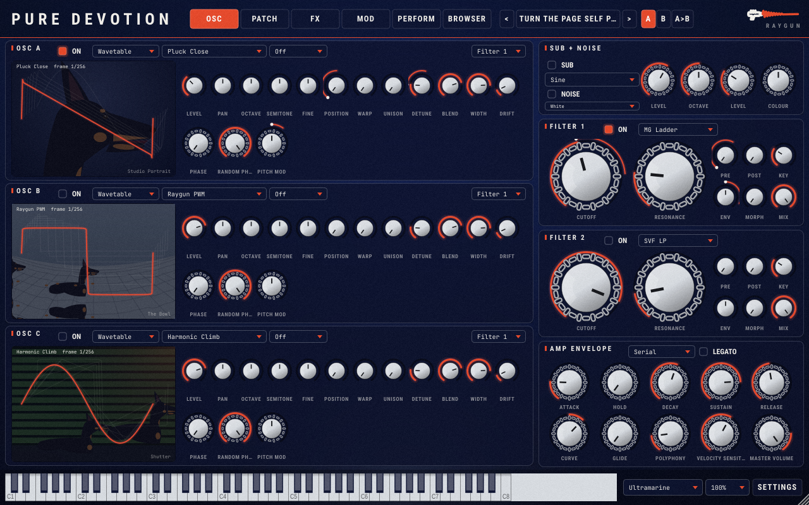
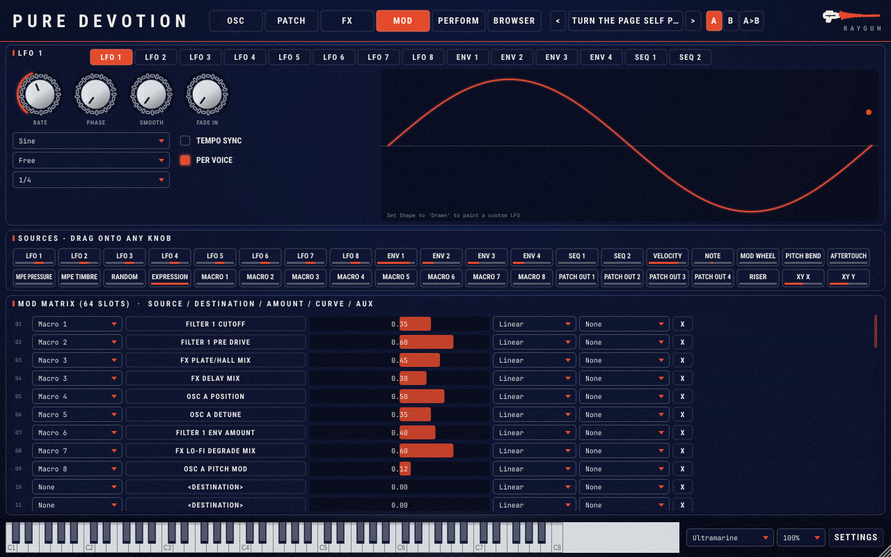
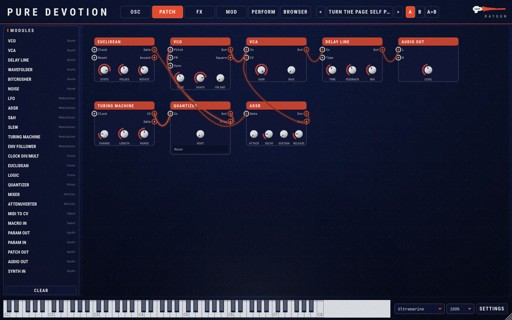

Hybrid wavetable synthesizer and semi-modular patching instrument for live performance.
Version 1.0 · VST3 · AU · Standalone · macOS (Universal) · Windows (x64)

Pure Devotion is organised into six tabs: OSC, PATCH, FX, MOD, PERFORM and BROWSER. The header shows the current preset with previous/next arrows and A/B compare (A, B, and A>B to copy). The footer has an on-screen keyboard, theme selector, UI scale (75–200%) and Settings.

Three main oscillators, each with a selectable engine:
| Engine | What it does | Key controls |
|---|---|---|
| Wavetable | 256-frame band-limited tables, 32 original factory tables plus your own imports. | Position, Warp mode (Bend +/−, Sync, PWM, Mirror, Quantize, FM < B, RM < C) |
| Multisample | One-shot, loop or Slice. In Slice mode each key from middle C (note 60) upward plays the next slice; the built-in chopper finds transients automatically. | Sample, Mode, Slice, Position (start) |
| Granular | Up to 24 overlapping grains. | Position, Density, Size, Spray, Freeze |
| Spectral | Additive resynthesis of the sample's harmonics, with true formant shifting. | Position, Formant, Spectral Tilt, Freeze |
| Analog | Band-limited saw, pulse, triangle and supersaw with analog drift. | Shape, Pulse Width / Supersaw spread |
Every oscillator has up to 16 unison voices (Detune, Blend, Width, per-voice Drift), level, pan, octave/semitone/fine, a modulatable Pitch Mod (±48 st) and a route to Filter 1, Filter 2, both, or direct.
Drop a .wav onto a display to import it as a wavetable (in Wavetable mode) or as a sample (other modes). 2048-sample frames are read directly; other files are sliced into up to 256 frames. Shift-drag on the display draws into the current frame; right-click → Normalise + spread blends the drawn frame across neighbouring frames. Right-click also chooses the Two Dogs scene behind that display.
The sub oscillator (sine, triangle, square; −1/−2 oct) and the texture oscillator (white, pink, vinyl, tape hiss, crowd, rain, cassette flutter, with a colour control) sit alongside. Two filters run in Serial, Parallel or Split (F1 left / F2 right). Types: MG Ladder, Diode, SVF LP/BP/HP/Notch/Peak, Comb +/−, Formant (vowel morph) and the self-oscillating Rave Ladder. Each has pre and post drive, key tracking, envelope amount (Env 2) and Morph (12→24 dB slope on SVF, vowel on Formant, damping on Comb).

8 LFOs (sine, triangle, saw, square, S&H, smooth random, drawn; Free, Retrig, One-Shot or Envelope mode; tempo sync, fade-in, per-voice or global), 4 envelopes (ADSR with hold and curve, or MSEG with up to 16 points and a sustain point) and 2 sixteen-step sequencers.
Drag and drop: drag any source chip onto a knob to create a modulation. Orange rings show the range; a white dot shows the live value. Right-click a knob to set amounts or remove routes. The matrix has 64 slots, each with source, destination, amount, curve (linear, exponential, logarithmic, S-curve, stepped, inverted) and an aux source that scales the modulation. Other sources: velocity, note, mod wheel, pitch bend, aftertouch, MPE pressure and timbre, random, expression, macros 1–8, Patch Out 1–4, Riser and XY.

Drag modules in from the list (or double-click), then drag from an output jack to an input jack. Pull a cable off an input to repatch it. Cables sag, and they glow brighter with signal level. Drag a knob vertically; double-click resets it. Right-click a module for options or to delete it.
| Group | Modules |
|---|---|
| Sound | VCO, VCA, Delay Line, Wavefolder, Bitcrusher, Noise |
| Modulation | LFO, ADSR, S&H, Slew, Turing Machine, Envelope Follower |
| Clock / Pitch / Utility | Clock Div/Mult, Euclidean, Logic (AND/OR/XOR/NAND), Quantizer (6 scales), Mixer, Attenuverter |
| Inputs | MIDI to CV, Macro In |
| Synth jacks | Param Out drives any main synth parameter. Param In reads one. Patch Out 1–4 feed the mod matrix. Audio Out mixes into the synth before FX. Synth In taps the synth's output. |
Clock inputs left unconnected follow host 16ths, so Euclidean, Turing and S&H modules run in time straight away.
16 effects: Tape, Cassette, Hyper/Dimension chorus, Phaser, Flanger, Plate/Hall reverb, Shimmer, Ping-Pong/Tape/Stereo delay, Multiband OTT, Transient Shaper, Distortion (tube/fold/fuzz/bit, oversampled), Filter, EQ, Sidechain Ducker (internal 4/4 or host sidechain input), Lo-Fi Degrade and Stereo Widener. Drag a row's handle (or use the arrows) to reorder. Each effect runs on bus A or B; the two buses run in parallel and are summed with their own levels.
2,850 factory presets in four banks: Pure Devotion (2026), Good Lies (2023), EPs & Singles, and Live / Performance Scenes. Filter by bank, track, category, genre, mood, type, folder, rating, favourites, MPE, CPU-light and macros-ready. Similar Sound ranks presets by an audio fingerprint taken from a test render. With Audition on, selecting a preset loads it and plays a short note. Save As writes to your user folder (Documents/Raygun/Pure Devotion/User Presets).
Every factory preset was rendered during production and gain-staged so it neither clips (peak ≤ −1.5 dBFS) nor sits silent.
| Setting | Notes |
|---|---|
| Oversampling 1×/2×/4×/8× | Oversamples the voice path. Latency is reported to the host. |
| Eco mode | Caps unison at 4 voices, limits spectral partials and disables oversampling. |
| MPE | Per-note pitch bend (±48 st), pressure and timbre (CC74) on member channels 2–16. |
| Macros as MIDI CC | Sends macros 1–8 out on CC 20–27. |
| Two Dogs visualisers | On/off, opacity 0–60%, full-screen scene. Turn them off for zero visualiser CPU. |
| Film grain, GPU rendering | Grain 0–4%. OpenGL rendering on macOS and Windows. |
Presets are versioned JSON files (.pdvo). They hold metadata (bank, track, release, category, tags, audio fingerprint), parameters by ID, the mod matrix, MSEG and LFO shapes, the modular patch, scenes and macro names. Older format versions are migrated on load, and parameters a file doesn't mention fall back to their defaults.
Pure Devotion is by Raygun. All wavetables, samples, presets, artwork and visualiser scenes were created in-house. No artist endorsement is claimed or implied. Fonts: Roboto Condensed (Apache 2.0) and JetBrains Mono (SIL OFL 1.1). Built with JUCE.